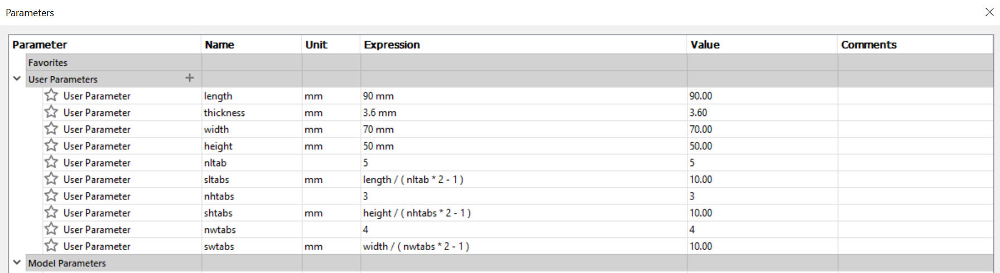

Musical Box
Create a sketch of a rectangle with joints at each sides (Side Wall) >>> Repeat sketch step for (Front Wall) >>> Extrude and combine the walls >>> create midplane on each wall >>> mirror the side wall using the front wall midplane >>> repeat step for front wall using side wall midplane >>> create the bottom wall and combine >>> design the top
Dimension:
90mm x 70mm x 50 mm
Parameters:

The wood thickness is 3.6mm. The settings for the print to cut is Auto Focus,Power:90%, Speed:10% ,Frequency:10% and Air assist on.
The settings to engrave is Power:90%, Speed:40%. The first cut didnt cut through, repeating the cut, the engrave
cause burn marks, to counter this i sand it to remove the burn mark.
I secured the box using super glue and cut the holes for the music box.